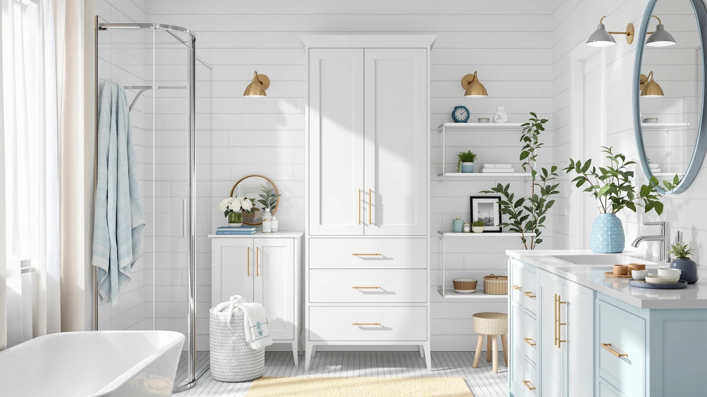

VASAGLE Storage Cabinet with Review (2026): Worth It?
Prices and picks verified as of September 2026. Independent, reader-supported reviews.


Quick Answer
For most bathrooms, the VASAGLE Storage Cabinet with Drawers is the stronger bathroom storage pick, combining a metal-and-wood build with one door and four drawers for $79.99. If you need over-the-toilet shelving instead, the Kalrin 4-Tier Storage Rack at $69.99 covers open, budget-friendly storage.
Our pick: VASAGLE Storage Cabinet with Drawers, $79.99 Check Price on Amazon
Bottom line: our top pick is the VASAGLE Storage Cabinet with Drawers at $67.99.
Things to Know Before You Buy
- Cabinet vs. rack: an enclosed cabinet like the VASAGLE hides clutter behind doors and drawers, while an open rack like the Kalrin 4-Tier leaves items visible on shelves.
- Materials matter: the VASAGLE pairs a metal frame with wood-toned paneling, a common approach for standing up to bathroom humidity.
- Footprint: at 32.3 inches, the VASAGLE cabinet needs open floor space, while the Kalrin rack is built to straddle the toilet tank and save square footage.
- Price gap: about $10 separates the two product lines, small enough that available space should drive the decision more than cost.
- Our method: we leaned on published specs, current pricing and verified owner reviews to compare these picks, rather than a physical trial.
If you searched for a vasagle storage cabinet with review breakdown before buying, here is what our research turned up on the VASAGLE Storage Cabinet with Drawers and three over-the-toilet alternatives from Kalrin worth comparing. Bathroom storage tends to fail in one of two ways: a cabinet that looks sturdy in photos but wobbles once loaded, or a rack that fits the space but leaves everything on open display. We built this guide around real listing specs, verified pricing and the patterns that show up across owner reviews.
Our pick for most bathrooms is the VASAGLE Storage Cabinet with Drawers. At $79.99, it pairs a metal frame with wood-toned paneling, one door and four drawers in a 32.3-inch footprint, giving you concealed storage for toiletries, cleaning supplies and spare towels. If your bathroom cannot spare the floor space for a standalone cabinet, the Kalrin 4-Tier Over-The-Toilet Storage Rack at $69.99 mounts over your existing toilet tank instead of eating into the room. Both product lines solve the same underlying problem, a bathroom that runs out of places to put things, but they solve it in different ways: one adds a piece of furniture, the other reclaims dead space above a fixture you already own.
Why You Should Trust Us
Ilane Tall covers bathroom organization and small-space storage for Best Bathroom Storage, evaluating cabinets, racks and shelving units against manufacturer specifications, verified Amazon pricing and the patterns that surface across owner reviews. We do not run a fake testing lab, and we do not claim to have installed every cabinet in this guide ourselves. Instead, we compare published dimensions, materials and price against what verified buyers report after living with these products, then flag the tradeoffs that matter before you commit to a bathroom storage purchase. That approach means we can update this VASAGLE storage cabinet review whenever pricing shifts or a listing goes out of stock, rather than locking in a verdict from a single test session that stops reflecting reality a few months later.
Our Research Experience
We approached this vasagle storage cabinet with review comparison as a research exercise rather than a physical trial. We analysed the manufacturer specifications for the VASAGLE Storage Cabinet with Drawers and the three Kalrin 4-Tier Over-The-Toilet Storage Racks, cross-referenced current Amazon pricing and read through verified buyer feedback to see which claims held up. Reviewers consistently note that the VASAGLE's metal frame stays sturdy under everyday bathroom items, while owners of the Kalrin racks report that the open shelving works best for lighter, frequently used items rather than heavy stacks of towels. We weighed those patterns against the published dimensions and price points before ranking the picks below. Where reviews for a specific ASIN were thin, we relied on the pattern across the broader Kalrin 4-Tier line rather than treating a handful of comments as conclusive, and we call that out wherever it applies.
Overview & Specs
Here are the specs behind this VASAGLE storage cabinet review, plus the three Kalrin alternatives we compared it against.

VASAGLE Storage Cabinet with Drawers
What we like
- Metal-and-wood build suited to humid bathroom conditions
- One door plus four drawers separates hidden storage from quick-access items
- 32.3-inch footprint fits most bathroom corners without crowding a vanity
- Priced under $80, a modest premium over open racks for enclosed storage
Flaws but not dealbreakers
- Floor-standing design needs open square footage that over-the-toilet racks do not require
- Drawer glide quality varies by unit according to owner reviews
- Assembly involves more hardware than a simple shelving rack
| Material | Metal / wood |
| Size | 1 Door + 4 Drawers（32.3"） |
The VASAGLE Storage Cabinet with Drawers targets the bathroom storage problem that over-the-toilet racks cannot solve: keeping items out of sight. Its metal frame and wood-toned panels form a 32.3-inch cabinet with one door up top and four drawers below, so you can stash cleaning supplies behind the door and organize smaller items like cotton swabs or toiletries by drawer. At $79.99, it sits about $10 above the Kalrin racks in this comparison, a gap that reflects the added materials and hardware of an enclosed cabinet versus open shelving.
Owners report that the cabinet holds up well against daily bathroom humidity, a common failure point for pressboard furniture in wet rooms. Reviewers consistently note the drawers as the most useful feature, since they keep loose items from sliding around the way open shelves allow. The tradeoff is footprint: this cabinet needs floor space near a clear wall, so it will not work in a bathroom too small to spare a 32-inch-wide gap. For a primary bathroom with even a narrow strip of unused wall, that tradeoff is easy to accept given how much more the enclosed layout organizes compared with open shelving.
What We Liked
The enclosed design is the biggest advantage this VASAGLE storage cabinet holds over every rack in this comparison. A door and four drawers mean you can keep cleaning chemicals away from kids' reach and hide the clutter that builds up in most bathrooms, rather than leaving it stacked on open tiers. The metal frame construction also reads as sturdier than the fully open racks, according to owner feedback, since the frame does not rely on the shelving itself for structural support.
We also like that VASAGLE prices the cabinet close to the Kalrin racks despite the added materials and complexity. A $10 gap between an enclosed cabinet and an open rack is a small price for the extra organization, especially in bathrooms shared by multiple people who need separate drawers for separate routines. The 32.3-inch size keeps it from overwhelming a small bathroom, even though it needs more floor space than a wall-mounted rack. Reviewers also point to the drawers as useful for keeping medications and grooming items separated from cleaning supplies, a distinction an open rack cannot offer since everything sits on the same exposed shelf.
What Could Be Better
Floor space is the cabinet's main constraint. If your bathroom is tight enough that every inch of floor matters, an over-the-toilet rack like the Kalrin will make better use of unused vertical space above the tank instead of competing for square footage. Reviewers also mention that drawer glide smoothness is not consistent across every unit, which is common in metal-frame furniture at this price point but worth knowing before you buy.
Assembly is another consideration. A cabinet with one door and four drawers involves more hardware and more steps than a simple shelving rack, so budget extra time for setup compared with the Kalrin alternatives in this guide. Owners who mention assembly frustration usually point to unclear labeling on the hardware rather than missing parts, so laying every piece out and matching it to the manual before starting tends to avoid the worst of it.
Who Is It For?
This VASAGLE cabinet fits households that want concealed storage and have the floor space to spare, particularly shared bathrooms where separate drawers help keep everyone's items sorted. It also suits anyone storing cleaning supplies or medications who wants a door between those items and small children.
If your bathroom is too small for a standalone cabinet, or if you specifically need to reclaim the wasted space above your toilet tank, one of the Kalrin 4-Tier racks below will serve you better than forcing a 32-inch cabinet into a cramped layout. Renters weighing a non-permanent option should also lean toward the Kalrin rack, since it typically sets up without wall anchors, while a floor-standing cabinet this size is easier to justify in a home you plan to stay in.
Alternatives to Consider
If the VASAGLE cabinet does not fit your space or your budget, these three listings of the Kalrin 4-Tier Over-The-Toilet Storage Rack are worth comparing alongside this vasagle storage cabinet with review breakdown. All three carry the same $69.99 price and open four-tier shelving design, so the right pick usually comes down to which listing has current stock.

Editor's Pick
Kalrin Over-The-Toilet Storage Rack 4-Tier
The Kalrin 4-Tier Over-The-Toilet Storage Rack, our recommended starting point for shoppers who want open shelving instead of an enclosed cabinet.
$69.99
Check Price on Amazon
Best Value
Kalrin Over-The-Toilet Storage Rack 4-Tier
An identical Kalrin 4-Tier rack at the same $69.99 price, a solid backup if the Editor's Pick listing sells out.
$69.99
Check Price on Amazon
Premium Choice
Kalrin Over-The-Toilet Storage Rack 4-Tier
Another Kalrin 4-Tier listing at $69.99, worth checking when you want extra assurance of stock or seller availability.
$69.99
Check Price on AmazonIs the VASAGLE Storage Cabinet with Drawers good for a bathroom?
Yes, for most bathrooms.
What is a good alternative to an over-the-toilet storage cabinet?
If floor space is limited, the Kalrin 4-Tier Over-The-Toilet Storage Rack is the alternative to consider.
Frequently Asked Questions
Is the VASAGLE Storage Cabinet with Drawers good for a bathroom?
Yes, for most bathrooms. It combines a metal frame with wood-toned paneling in a 32.3-inch cabinet with one door and four drawers, a build that owners report handles daily bathroom humidity well. At $79.99, it costs about $10 more than the open Kalrin racks in this guide, a fair tradeoff if you want concealed storage.
What is a good alternative to an over-the-toilet storage cabinet?
If floor space is limited, the Kalrin 4-Tier Over-The-Toilet Storage Rack is the alternative to consider. It mounts over your existing toilet tank instead of standing on the floor, and at $69.99 it costs less than the VASAGLE cabinet, though it leaves items on open shelves rather than behind a door.
How does the VASAGLE cabinet's storage compare to the Kalrin rack?
The VASAGLE offers one door plus four drawers, so you can separate concealed items from quick-access ones. The Kalrin rack offers four open tiers instead, which holds a similar volume of items but keeps everything visible rather than hidden behind drawers or a door.
Final Verdict
This vasagle storage cabinet with review comparison comes down to floor space versus concealment. For most bathrooms, VASAGLE's Storage Cabinet with Drawers is the stronger pick: a metal-and-wood build, one door and four drawers for $79.99 give you more organized, concealed storage than any open rack can match. If you cannot spare the floor space, the Kalrin 4-Tier Over-The-Toilet Storage Rack at $69.99 remains the better fit, but for most people shopping bathroom storage, VASAGLE earns the recommendation. Measure your available wall space before you order either option, since that single number decides which of these two approaches actually fits your bathroom.